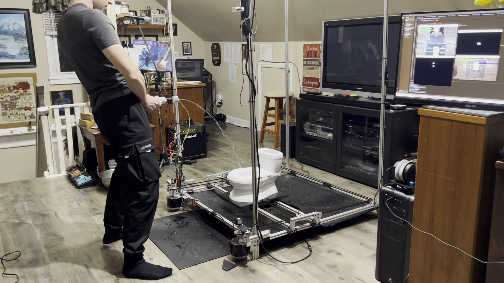
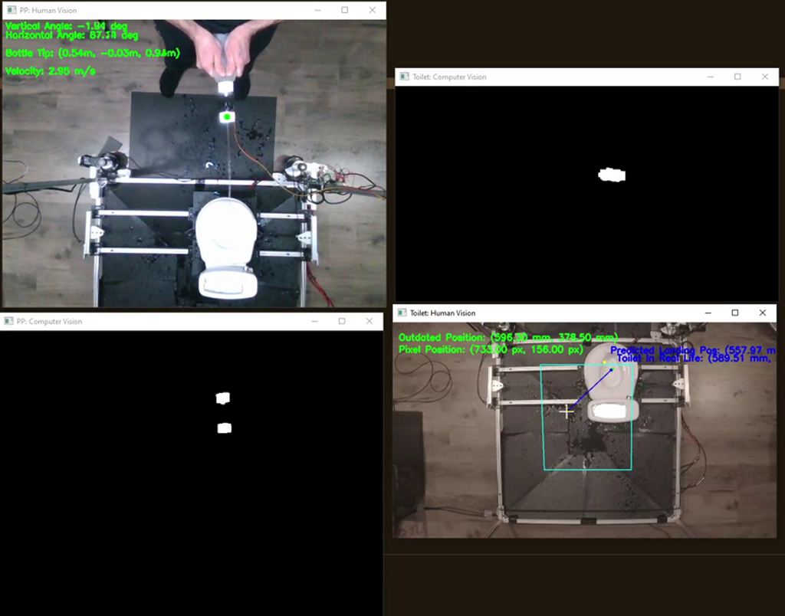
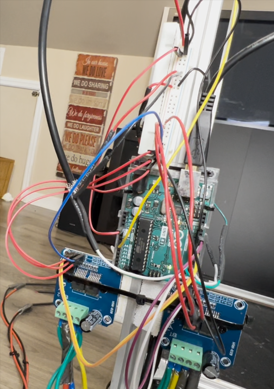

A robotic toilet that predicts the trajectory of a liquid before it lands, and quickly moves the bowl to catch it.

Description
To refine my skills and test myself, I set on the ambitious journey of building an automatically aiming toilet. Using a "controller" I created using a repurposed siracha bottle, the user would need to fill the bottle with water, stand infront of the machine, hold the bottle near waist height, aim at any position within a 1x1 meter square, and the machine will never let the user spill water on the floor. Using a variety of sensors, the machine will rapidly move the bowl underneath the stream of water.

Computer Vision
Using a GoPro, the Intel RealSense Depth Camera, retroreflective tape, and linear algebra matrix math, I used the Python OpenCV library and depth camera information to detect the X, Y, and height position and angle of the bottle, and toilet bowl. Based on all this informaiton, as well as a flowsensor to detect initial velocity, I was able to use kinematic physics equations to predict the landing position of the liquid before landing, as well as what direction and how far to move the bowl to catch it.

Arduino/Electronics
Skills Used
- Arduino
- C++
- Interrupts
- Serial Communication
- Python
- Computer Vision
- OpenCV
- Intel RealSense Depth Camera
- Linear Algebra
- Kinematic Physics